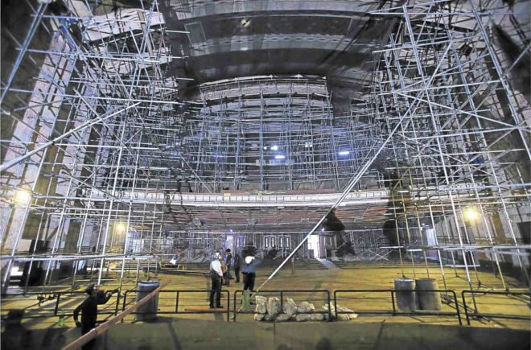
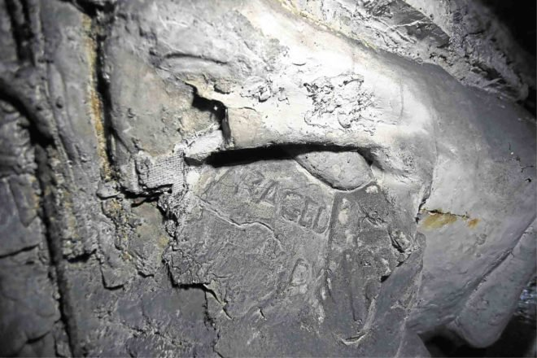
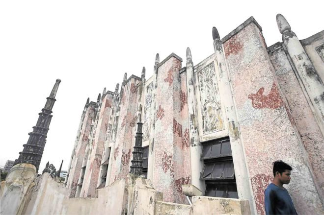
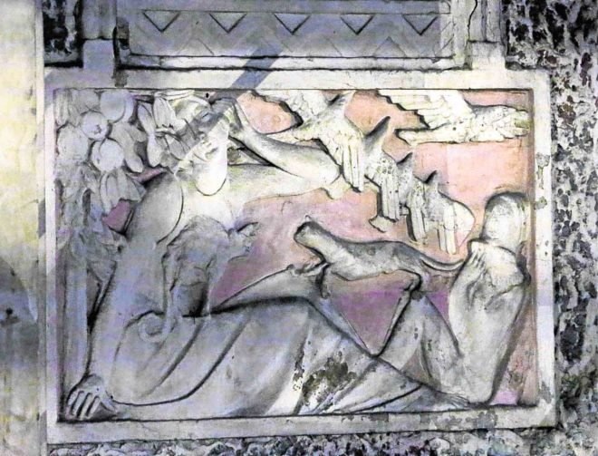
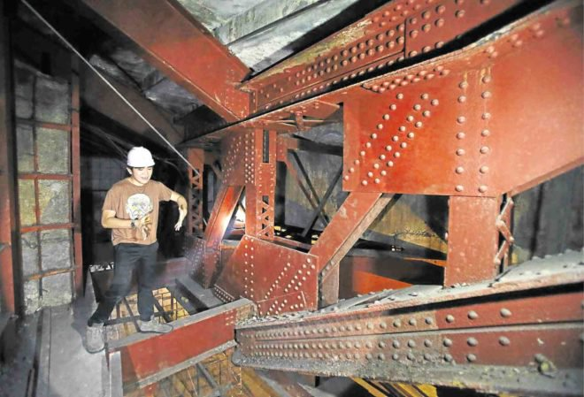

A peek into Metropolitan Theater's restoration

The old lady still has a surprise or two hidden under her skirts.
As the restoration of the Manila Metropolitan Theater on Arroceros Street continues apace, workers continue to uncover hidden treasures.
“It’s as if the Met is revealing itself in its own way in the course of rehabilitation,” says Gerard Lico, the architect in charge of the project.
Intact proscenium
Just two weeks earlier, for instance, workers dismantling the anachronistic proscenium arch above the stage of the main auditorium were surprised and amazed to discover the original, 1930s Art Deco proscenium—designed by the Italian sculptor Francesco Riccardo Monti—hidden behind it, still intact.
The anomalous proscenium arch was a later addition by then First Lady Imelda Marcos, who made the first attempt to resuscitate the Met in the late 1970s.

But Lico was bothered by its neoclassical design, which was at odds with the theater’s Art Deco character.
The plan was to try and recreate the original from photographs, but that will no longer be necessary with the discovery of Monti’s original, which is still in salvageable condition.
“We will just remove what was added on and restore the original 1930s proscenium, which is made of concrete and plaster,” says Lico.
Other hidden gems continue to be uncovered in the course of the work.
Dismantling the obsolete air-conditioning units, for instance, revealed some nice original wrought-iron grillwork behind it.
The demolition of structures which were added in the late 1970s uncovered carved bas reliefs which were hallmarks of the Art Deco style.
The disintegration of the wooden cladding underneath the theater balcony has also revealed massive steel girders worthy of the Ayala Bridge, which was also undergoing reconstruction during the same period. Juan Arellano, the architect of the Met, clearly overbuilt the theater to last. Despite the ravages of time and neglect, its bones are sound.

Original plan
“Our bible is now the original plan rather than the newly prepared plans made by our design consultant, because we keep discovering new things about the building,” adds Lico.
It helps that the Met is one of the most extensively documented heritage structures still standing. Apart from the original plans, various engineering and structural studies were undertaken during the course of the various attempts to save it.
After Mrs. Marcos’ 1978 renovation, another attempt was made during President Gloria Macapagal-Arroyo’s term. Hopefully, the third time will be the charm.
Of course, not every discovery is cause for celebration.
The restoration team was dumbstruck, for instance, when they were told that “History of Dance,” one of two Fernando Amorsolo paintings that originally graced the Met and was thought to have been stolen, may have been torn down and used as a mat for the boxing ring. (At one point during its decades-long slide into dereliction, the Met was used as a boxing arena.)
The metal framework for the stained-glass marquee, says Lico, has also corroded to the point where one strong typhoon could bring the whole thing crashing down. It will have to be reconstructed. (Luckily, Kraut Art Glass, which made the original, is still around.)
Old tunnels
They also confirmed the old urban legend which told of tunnels running underneath the Met.
In fact, the original design for the air-conditioning system consisted of underground tunnels that connected the main theater to a nearby ice plant. Cold air was pumped from the ice plant through channels running underneath the theater seating.
Ingenious. Except that when the ice plant was demolished, the tunnels were left intact. During the rainy season, they filled with water, causing the perennial flooding of the Met’s orchestra pit.
The 1978 renovation of the Met included adding a structure where the inner courtyard used to be, to house a dance hall and a music hall.
“Because the structure was built hurriedly, it is now compromising the integrity of the Met, so we are dismantling it,” says Lico.
In its place will be built a new and better facility, which could see use as a cinematheque and a black box theater for smaller productions for which the 1,700-seat main auditorium would be too large. Lico also envisions the new structure to have an amphitheater and a green garden space on its roof-deck, which will eventually be linked via a bridgeway to the Light Railway Transit-1’s Central Station to serve as a new public space.
“Our approach is adaptive reuse,” he explains. “We want to adapt the building to fit the needs of 21st-century users. The challenge is to maintain the integrity and authenticity of what is left.”
Rather than talk about restoration, which suggests returning the Met to its state in 1931, when it was first opened, Lico prefers to call what they are doing rehabilitation and conservation: restoring what can be saved, and creatively reimagining what has been lost, while preserving the character of the original Juan Arellano design.

Sustainability
Sustainability is another dimension of adaptive reuse. To solve the flooding problem, for instance, the team plans to fill the underground tunnels with eco-foam, an environmentally safe insulation material which will also be used in the roofing. Solar panels will be installed on the roof to supplement the Met’s power requirements.
“We will bring the Met up to 21st-century standards,” says Lico. “The theater equipment will be at par with global standards.”
Lico estimates that the project will take up to five years to complete, at an estimated cost of P700 to 800 million, which will include improvements of the adjacent areas and new utilities (power, water, communications).
As of now, however, the project team is under pressure to complete the rehabilitation of the main theater itself, hopefully in time for the Met’s 86th anniversary this December.

Eventually, he adds, the hope is for the resurrected Manila Metropolitan Theater to serve as a keystone to the regeneration of the whole area. The Met will serve as the missing link between the newly expanded National Museum, Intramuros and the Manila Central Post Office—incidentally another Juan Arellano-designed landmark—which is also being eyed for “adaptive reuse.”
“The Met will spark the regeneration of Manila as a cultural hub,” says Lico.
Subscribe to MANILArt and receive weekly updates.


MANILArt is an arts and humanities website which aims to promote the history and culture of Manila.